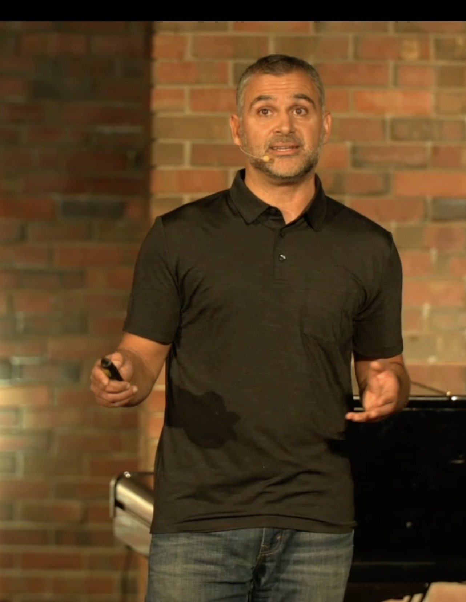

For more than twenty years, one December evening has captured something Andrew Farhat keeps trying to put into words: what a community known for grace actually looks like when it gathers.
The event is called Advent by Candlelight. More than 300 women gather around tables in the worship center to share hearty appetizers, drink coffee, and enjoy unhurried conversation. Then they hear a message of hope and sing Christmas carols together by candlelight.
An upside-down picture
What makes the evening unusual is who does the serving. The church's male volunteers handle all of it, carrying plates, refilling cups, clearing tables, in a deliberate picture of Christ's sacrificial love. Andrew finds the reversal quietly powerful: leadership expressed as service rather than spotlight, the kind of perspective Andrew brings to his work with other ministry leaders.
That image, he suggests, is the whole Gospel in miniature. A community known for sharing and experiencing liberating grace is one where status is set aside and people are simply cared for. Advent by Candlelight makes that visible for one night in a way a sermon rarely can.
Why tradition still works
In a city Andrew often describes as full of distraction and misplaced hope, a candlelit room and a shared table cut against the noise. The gathering blends the classic and the modern, old carols and honest conversation, which is the same texture Andrew aims for across his ministry.
It is also, frankly, an invitation. Many women attend who would never describe themselves as religious, and the evening offers them a low-pressure encounter with a community at its warmest. That is outreach in its most human form, the same instinct behind the church’s Life Groups and its work in Christian education.
From one night to everyday life
Andrew is quick to note that a single evening is not the point. Advent by Candlelight works because it reflects something the community is practicing all year, the kind of hospitality he teaches households to build through Spiritually Vibrant Homes.
The hope is that the warmth of one December night becomes a habit carried into ordinary weeks: a neighbor invited in, a hard story heard without judgment, a table made a little bigger. That is how a tradition becomes a way of life.
Conclusion
For Andrew Farhat, Advent by Candlelight is more than a beloved event. It is a working definition of the grace he preaches, served one table at a time. You can read more about the ministry behind it on his about page.